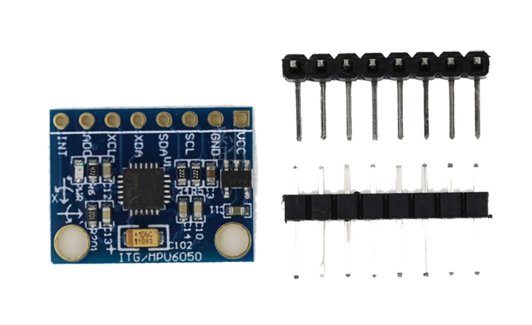

MPU6050的DMP数据获取的示例代码

发布于
MPU6050是一种集成了三轴加速度计和三轴陀螺仪的惯性测量单元。DMP（数字运动处理器）是在MPU6050内部嵌入的一个可编程处理器，可用于实现复杂的传感器融合算法。
要获取MPU6050的DMP数据，您需要使用适当的硬件连接将 MPU6050 连接到您的开发板上，然后使用相应的库或驱动程序来访问和读取 MPU6050 的传感器数据。具体的步骤和实现方式可能因所选的开发板和编程语言而不同，建议查阅相关文档或教程以获取更详细的信息。
以下是使用 MPU6050 中的 DMP 获取数据的示例代码：
#include <Wire.h>
#include <MPU6050_6Axis_MotionApps20.h>
// 初始化 MPU6050
MPU6050 mpu;
// 用于 DMP 初始化的变量
Quaternion q;
VectorFloat gravity;
void setup() {
// 初始化串口
Serial.begin(9600);
// 初始化 I2C 总线
Wire.begin();
// 初始化 MPU6050
mpu.initialize();
// 激活 DMP
mpu.dmpInitialize();
// 开启 DMP
mpu.setDMPEnabled(true);
// 设置采样率
mpu.setRate(50);
// 获取重力加速度向量
mpu.getGravity(&gravity);
// 获取初始四元数
mpu.dmpGetQuaternion(&q, mpu.dmpGetFIFOBytes());
}
void loop() {
// 获取最新的姿态数据
Quaternion quat;
VectorFloat accel;
VectorFloat gyro;
int32_t fifoCount = mpu.getFIFOCount();
if (fifoCount > 0) {
mpu.getFIFOBytes(fifoBuffer, fifoCount);
mpu.dmpGetQuaternion(&quat, fifoBuffer);
mpu.dmpGetAccel(&accel, quat);
mpu.dmpGetGyro(&gyro, quat);
// 输出姿态数据
Serial.print("qW: ");
Serial.print(q.w);
Serial.print("\tqX: ");
Serial.print(q.x);
Serial.print("\tqY: ");
Serial.print(q.y);
Serial.print("\tqZ: ");
Serial.print(q.z);
Serial.print("\troll: ");
Serial.print(atan2(2*q.y*q.w - 2*q.x*q.z, 1 - 2*q.y*q.y - 2*q.z*q.z) * 180/M_PI);
Serial.print("\tpitch: ");
Serial.print(asin(2*q.x*q.y + 2*q.z*q.w) * 180/M_PI);
Serial.print("\tyaw: ");
Serial.println(atan2(2*q.x*q.w - 2*q.y*q.z, 1 - 2*q.x*q.x - 2*q.z*q.z) * 180/M_PI);
}
}
这段代码假设你已经下载了 MPU6050 库，并将其添加到 Arduino IDE 中。要使用此代码，你需要将 MPU6050 的 SDA 和 SCL 引脚连接到 Arduino 的对应引脚。此外，还需要安装 MPU6050 的 DMP 库。
此代码从 MPU6050 获取姿态数据并通过串口输出。它首先初始化了 MPU6050 并激活了 DMP，然后获取了初始的四元数和重力加速度向量。在主循环中，它不断获取最新的姿态数据，并通过四元数计算出滚转、俯仰和偏航角度。
评论
或 匿名发表评论